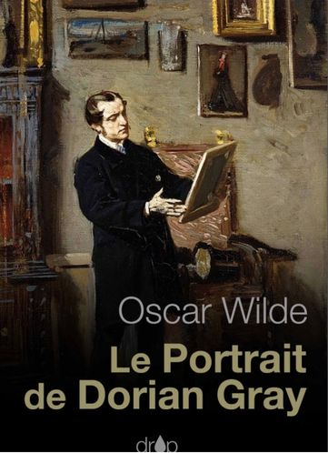

Le Portrait de Dorian Gray,
Oscar WILDE, 1890

Un jeune homme conserve sa jeunesse éternelle tandis que son portrait vieillit et se déforme au fil de ses péchés, jusqu’à sa propre destruction.
Le roman dénonce l’obsession de la beauté et de l’ascension sociale, qui corrompt peu à peu l’âme et les valeurs, jusqu’à conduire à la perdition